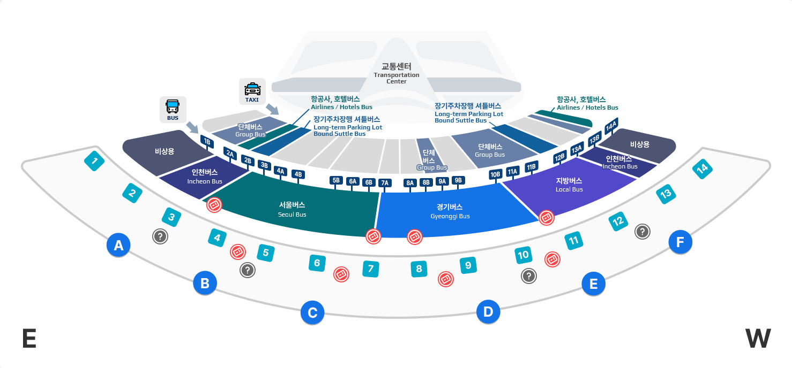

공항 베뉴 입국 셔틀
인천·김포공항에서 강릉 주요 호텔과 강릉역까지. 해외 참가자 대상 무료 · 사전신청 입국 셔틀입니다.
Route인천·김포공항 → 강릉 주요 호텔 → 강릉역
운영일2026.10.17(토) ~ 10.19(월) · 07:00~20:00 · 입국 피크 3일
Fare
무료· 해외 참가자 · 사전신청(배정)
시각·정차는 수송계획(안) 기준 임시 안내이며 확정 전 변경될 수 있습니다.
Airport Shuttle입국 셔틀 신청
- 입국일 · 공항 · 항공편 선택
- 사전 수요조사 기반 배정
- 배정 결과·탑승 위치 안내
신청·배정은 신청 페이지에서 진행됩니다
공항 웰컴데스크 · Welcome Desk
도착하면 여기서 안내받으세요
인천 T1·T2, 김포공항 국제선에 웰컴데스크를 운영합니다. 10.17~19 · 06:00~22:00.
- 📍 데스크 위치 — 인천 T1 입국장 13-16·27-28·30번 / 인천 T2 53-56번 / 김포 국제선 1층 2번게이트 측면
- 🕘 운영 — 10.17(토)~19(월) 06:00~22:00 · 셔틀 탑승 안내 + KTX·버스·택시 등 교통 안내
🖼️ 인천 T1·T2 웰컴데스크 사진입국장 데스크 실제 사진 (촬영 예정)
인천 T1 13-16·27-28·30번 / T2 53-56번
🖼️ 김포 국제선 웰컴데스크 사진1층 2번게이트 측면 (촬영 예정)
김포 국제선 1층 2번게이트 측면
운행 노선 · Routes
공항 → 강릉, 2개 노선
주요 호텔을 경유해 강릉역(KTX)까지 운행합니다.
탑승 위치 · Boarding
어디서 타나요?
- 인천 T1 — 1번 게이트 인근 단체버스 탑승장
- 인천 T2 — 4번 게이트 인근 단체버스 탑승장
- 김포 국제선 — 1층 5번 버스 탑승장

인천 T1 1번 게이트 / T2 4번 게이트 인근 단체버스 탑승장
🖼️ 김포 국제선 승차장 사진/약도1층 5번 버스 탑승장 (촬영·제작 예정)
김포 국제선 1층 5번 버스 탑승장
안내 · Information
이용 안내
- 해외 참가자 대상 무료 · 사전신청(배정) 셔틀입니다. 등록 페이지에서 입국일을 선택해 신청하세요.
- 10.17~18은 주요 호텔 입구에 정차 후 강릉역까지, 10.19는 컨벤션센터 입구에 하차합니다.
- 사전 수요조사 결과에 따라 배차·정차가 조정될 수 있습니다.
- 실시간 위치(트래킹)는 제공되지 않으며, 교통 상황에 따라 도착 시간이 달라질 수 있습니다.